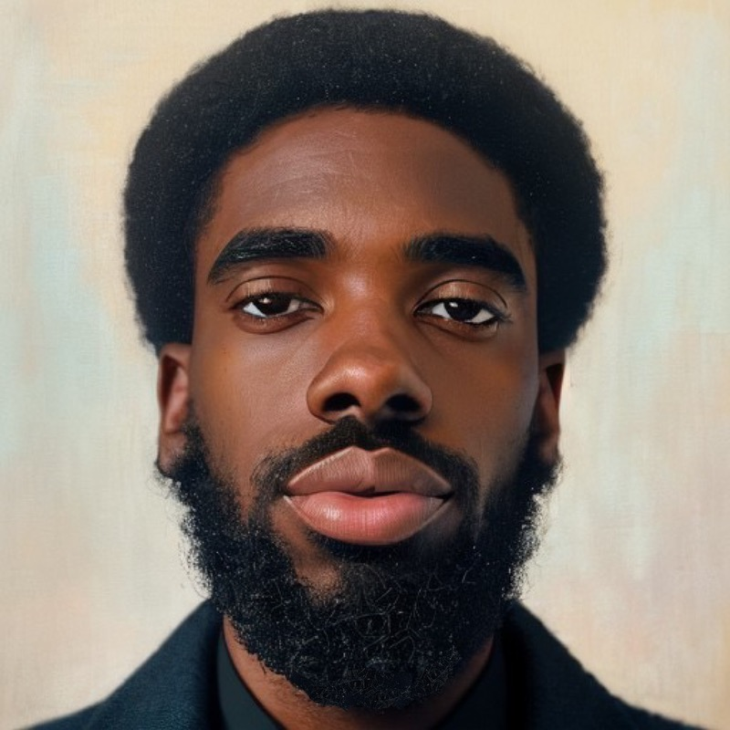

Oluwamosope Voss
Profile
Aspiring software engineer eager to expand knowledge and skills in the dynamic field of technology.
Currently honing expertise in programming languages such as Python, Java, and JavaScript, with a keen interest in mastering algorithms and data structures.
Dedicated to ongoing learning through Springboard online course, self-study, and hands-on projects.
Seeking opportunities to apply emerging skills and contribute to impactful projects while gaining valuable experience in the software engineering realm.
Education
Harmon High School 2011-2015
Paul Smith College 2015-2016
Employment History
Patient Service Representaive at UPMC
- Manage large amounts of inbound and outbound calls in a timely manner
- Follow communication “scripts” when handling different topics
- Identify customers’ needs, clarify information, research every issue and provide solutions and/or alternatives
- Seize opportunities to upsell products when they arise
- Build sustainable relationships and engage customers by taking the extra mile
- Keep records of all conversations in our call center database in a comprehensible way
- Frequently attend educational seminars to improve knowledge and performance level
- Meet personal/team qualitative and quantitative targets
Project Manager at FreeTheENTERTAINMENT
- Build and develop the project team to ensure maximum performance, by providing purpose, direction, and motivation
- Lead projects from requirements definition through deployment, identifying schedules, scopes, budget estimations, and implementation plans, including risk mitigation
- Coordinate internal and external resources to ensure that projects adhere to scope, schedule, and budget
- Analyze project status and, when necessary, revise the scope, schedule, or budget to ensure that project requirements can be met
- Establish and maintain relationships with relevant client stakeholders, providing day-to-day contact on project status and changes
- Provide input to ensure that teams consist of diverse, qualified individuals
- Ensure that staffing needs are being met with a long-term strategy in mind
- Devise and implement sourcing strategies, such as an employer branding initiative, to build pipelines for potential applicants
- Create and implement end-to-end hiring processes to ensure a positive experience for candidates
- Form close relationships with hiring managers to ensure clear expectations for candidates and interviewers
Registration at Allehgent Health Network
- Schedules patient appointments Utilizes tools within the practice management system to expedite the appointment scheduling process
- Adheres to scripts and protocols for handling various types of appointment requests
- Under direction, may distribute work assignments staff
- Prioritizes work in alignment with the needs of the patients, family members, caregivers and colleagues
- Ability to maintain a high level of professionalism and handles all situations diplomatically and courteously
- Minimum required education is high school diploma and/or GED equivalent
- Verify insurance information for new patients and referrals Update insurance information for existing patients
- Call to obtain pre-authorization for recommended services and procedures
- Explain to patients what their financial responsibilities will be Inform relevant clinical staff about denials
- Answer questions related to billing and insurance
Tools
Tool |
Description |
Proficiency |
Visual Studio Code |
A free coding editor that helps you start coding quickly.
Use it to code in any programming language,
without switching editors. |
Beginner |
Slack |
Messaging app for business that connects people to the information they need |
Expert |
Pycharm |
An integrated development environment used for programming in Python. |
Beginner |
Github |
An integrated development environment used for programming in Python. |
Intermediate |